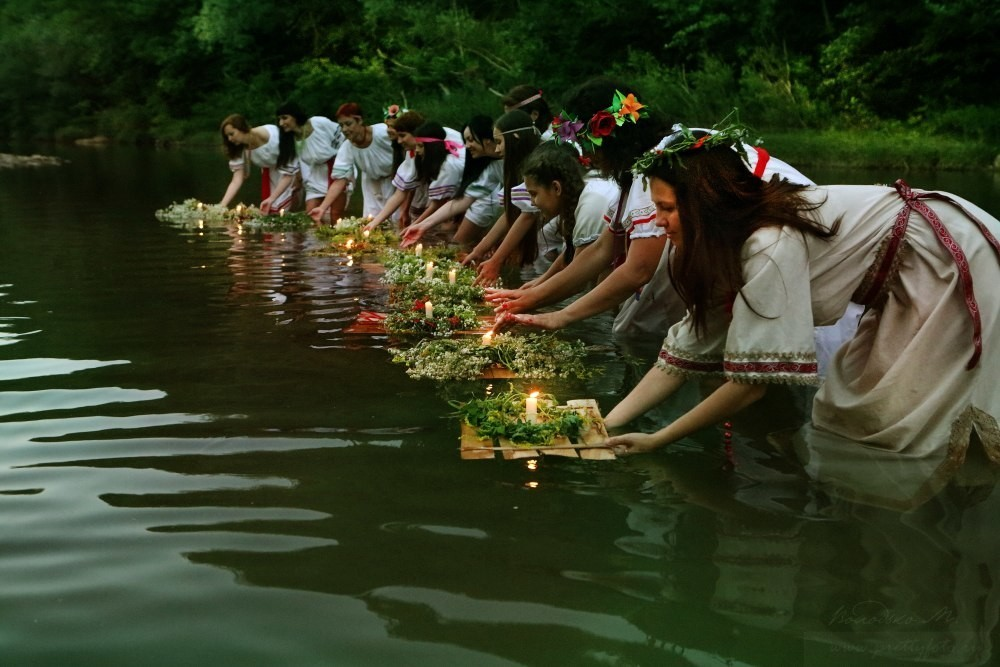

Татарский бытовой уклад | 22 Марта 2004
Дом татарской семьи делится на две части (мужскую и женскую), которые разграничивает «чаршау» (штора). На женской половине почётное место занимал сундук, красочно отделанный в красной или зелёной гамме. Туда складывали приданое дочерей, у каждой из которых был свой сундучок...
Читать далее

Абазинцы | 22 Марта 2004
Они проживают в основном в Республике Карачаево-Черкесия. Когда-то они строили свои дома методом плетения из веток (промысел называется «плетень»). Сегодня абазинцы предпочитают более современные жилища...
Читать далее
Башкирские традиции | 22 Марта 2004
Включают и свод запретов (их довольно много у мусульман), и семейные обряды, и правила гостеприимства, и традиционный принцип взаимопомощи («каз умахэ»). Башкирам запрещалось зимой обрабатывать, и вообще трогать землю, чтобы не тревожить её сон...
Читать далее

О русских традициях | 22 Марта 2004
Например, праздниках, связанных с христианскими и языческими датами — знают многие. К примеру, Пасху отмечают обильным угощением с ритуальными яствами на столе (кулич, творожная пасха, крашеные яйца). На святках в январе девушки гадают, за кого и скоро ли им суждено выйти замуж...
Читать далее
Саамы | 22 Марта 2004
Жители Кольского полуострова, где со всех сторон возвышаются белоснежные сопки. Саамами называет себя один из финно-угорских народов с древнейшей историей. Он официально признан самым малочисленным народом Севера. Традиции саамов, предписывающие жить в гармонии с природой, складывались веками...
Читать далее
Славянский быт| 22 Марта 2004
Дом татарской семьи делится на две части (мужскую и женскую), которые разграничивает «чаршау» (штора). На женской половине почётное место занимал сундук, красочно отделанный в красной или зелёной гамме. Туда складывали приданое дочерей, у каждой из которых был свой сундучок...
Читать далее